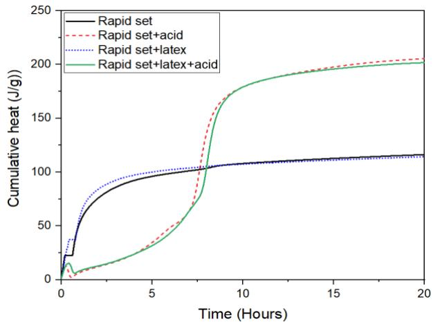
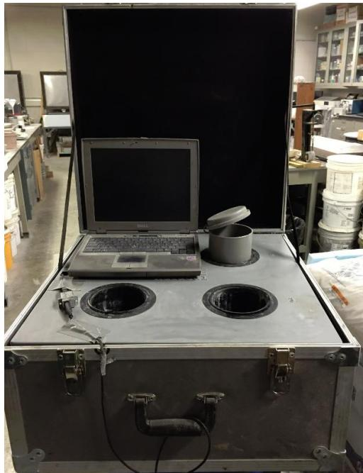
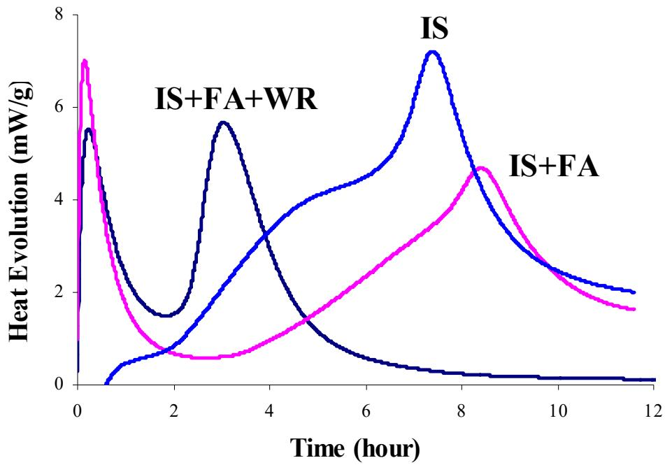

Calorimetry
Calorimetry is an analytical technique that quantifies the thermal energy released or absorbed during chemical reactions and physical changes by monitoring temperature variations in a controlled environment. The method operates by recording heat flow relative to a reference, allowing for the determination of reaction rates, phase transitions, and total heat evolution over time [1] [2]. These measurements yield characteristic thermal profiles that provide insight into material composition, setting behavior, and the overall degree of reaction within a system [3] [4]. Various instrumental configurations exist to manage heat exchange between the sample and its surroundings, each representing specific trade-offs among thermal isolation accuracy, test duration, sensitivity, and practicality [3] [5].
Calorimetry unifies these methods through the measurement of thermal energy to characterize cement hydration kinetics. An Isothermal Calorimeter quantifies this by maintaining a constant sample temperature to measure the continuous rate of heat evolution, while an Adiabatic Calorimeter enables precise hydration kinetics characterization by actively maintaining thermal equilibrium to eliminate heat loss during cementitious reactions. A Semi-adiabatic Calorimeter characterizes hydration kinetics by monitoring the rate of heat evolution in cementitious materials while allowing limited thermal transfer to approximate adiabatic conditions. The Heat Index Method quantifies cement hydration kinetics by interpreting the rate of heat evolution measured via calorimetry to assess concrete age and predict early-age performance. Finally, a Solution Calorimeter determines hydration heat indirectly by quantifying thermal energy changes associated with acid dissolution rather than monitoring continuous exothermic reactions.
Sources (16)
Sub-concepts (5)
Fundamentals
Calorimetry is an analytical technique that quantifies thermal energy exchange during chemical reactions or physical changes by monitoring temperature variations relative to a reference [1] [2]. By recording heat evolution over time, the method generates characteristic curves that reveal reaction kinetics, phase transitions, and material composition [2] [6]. Various instrumental configurations exist to maintain specific thermal conditions, each representing a trade-off between measurement accuracy, sensitivity, and practicality [3] [5].
The following figure illustrates typical calorimetry test results by displaying cumulative heat generation over time.

Cumulative heat generation during the hydration of cementitious materials with different additives. [1]The figure displays a graph plotting cumulative heat evolution over time for four distinct mixtures, including a baseline rapid set and variations incorporating acid or latex. The data illustrates how specific additives significantly alter the thermal profile of the cement hydration process compared to the standard mix.
Key findings
- Incorporating fly ash or slag into cement blends lowered the peak heat released during hydration, thereby reducing the thermal-cracking potential of pavement concrete [6].
- Applying a strength-time (TTF) requirement derived from normal-weather conditions to cold-weather curing underestimated maturity and led to premature traffic opening, demonstrating the need to calibrate predictions to both mix composition and curing climate [6].
- Heat-evolution signatures were inherently mix-specific and strongly governed by cement chemistry, fineness, water-to-cement ratio, supplementary materials, admixtures, and curing temperature, yet the industry lacked a unified method for interpreting these curves to predict concrete performance [3].
- Increasing mixing energy, particularly using a high-shear mixer at the highest speed and longest time, accelerated cement hydration, producing an earlier and higher rate of heat generation that correlated with a modest increase in the degree of hydration and slightly better early-age compressive strengths [7].
- A simple, low-cost calorimetry protocol using either an isothermal or semi-adiabatic device yielded repeatable heat-evolution data that clearly distinguished between different cement types, fly-ash levels, water-to-cement ratios, and curing conditions [2].
- Heat indexes related to the first derivative of the calorimeter curve and the area under the curve characterized mortar features and predicted mortar set time and early-age strength up to two days [2].
- Temperature exerted a dominant influence on calorimetric parameters, with higher testing or curing temperatures raising peak heat-generation rates, increasing the area under the curve, and shortening both initial and final set times [8].
- Hydration parameters derived from semi-adiabatic tests more accurately reproduced field heat evolution and improved HIPERPAV pavement-temperature predictions compared with isothermal-derived parameters [8].
Early-Age Thermal Monitoring Applications
Evidence: 16 reports (13 primary)
Early-age thermal monitoring in concrete relies on calorimetry, which measures the exothermic heat released during cement hydration by tracking temperature changes over time [9]. Semi-adiabatic configurations are commonly employed to capture this heat evolution while allowing controlled thermal exchange with the environment [9]. The resulting heat release profiles provide critical data for estimating key early-age properties, such as initial set time, by relating specific fractions of total heat output to setting behavior [9].
The experimental setup used to capture these thermal profiles is illustrated in the following figure.
 Calorimetry test device for measuring the heat of hydration of concrete [9]
Calorimetry test device for measuring the heat of hydration of concrete [9]
The apparatus consists of a portable case containing a laptop and two circular openings designed to hold sample containers.
Research problem — The absence of practical, standardized, and field-ready calorimetric methods prevents engineers from reliably monitoring heat evolution during concrete placement, forcing reliance on inaccurate laboratory data or legacy specifications that fail to account for modern mix complexities [3] [5] [8] [10]. Existing semi-adiabatic calorimetry techniques often yield variable results and temperature signatures that do not uniquely correspond to concrete setting times or actual field conditions, creating uncertainty in scheduling critical construction activities such as sawing and traffic opening [8] [11] [12]. There is a pervasive shortage of reliable calorimetric data for complex cementitious blends, including those with supplementary materials or internal-curing agents, which hinders the accurate prediction of thermal cracking risks and long-term durability [13] [1] [14] [2] [6] [4] [7] [15] [9].
To address these measurement challenges, the figure below illustrates a calorimetry test device designed to measure the heat of hydration in concrete.

A portable semi-adiabatic calorimeter setup featuring a laptop and sample containers. [11]The image displays a ruggedized transport case that has been opened to reveal a gray top surface equipped with circular apertures for inserting sensors or sample vessels. A laptop computer is positioned on the left side of the apparatus, likely serving as the data acquisition interface to monitor thermal energy released during chemical reactions. This device functions as a semi-adiabatic calorimeter used for collecting calorimetric data on the heat of hydration in concrete.
State of the art — The field has transitioned from specialized laboratory characterization to a standardized practice where semi-adiabatic calorimetry serves as the primary tool for early-age thermal monitoring and set-time prediction in pavement concrete [5] [9]. Industry consensus favors low-cost semi-adiabatic devices for field deployment due to their practicality, while retaining isothermal calorimetry as a diagnostic benchmark for detailed hydration kinetics and activation energy calculations [3] [8]. Current practice integrates heat-evolution data with performance-prediction software like HIPERPAV to forecast thermal cracking risk, though ongoing efforts aim to standardize test procedures and address the limitations of calorimetry in precisely defining setting times compared to ultrasonic methods [5] [8] [11].
The following figure illustrates a representative semi-adiabatic device used in this standardized practice.
 AdiaCal semi-adiabatic calorimeter with four cylindrical sample ports. [8]
AdiaCal semi-adiabatic calorimeter with four cylindrical sample ports. [8]
The image displays a portable, metallic case containing a white panel equipped with four circular openings designed to hold concrete cylinders for thermal monitoring. This device is identified as the AdiaCal calorimeter, which functions as a semi-adiabatic calorimeter used to test concrete temperature development history and set times.
Findings from the reports
- Calorimetric testing demonstrated that incorporating fly ash or slag into cement blends consistently lowers the peak heat released during hydration, thereby reducing the thermal-cracking potential of pavement concrete [6].
- The study found that both datum temperature and activation energy rise as the proportion of supplementary cementitious materials increases, indicating that blended mixes require more energy for hydration and cease strength gain at warmer temperatures than ordinary Portland cement [6].
- Calorimetric testing revealed that incorporating ground-granulated blast-furnace slag consistently lowered the peak temperature and delayed the time to maximum heat release, while finer slag grades generated noticeably more heat than coarser grades [13].
- The study demonstrated that mixing energy is a primary driver of cement-paste thermal development, with higher mixer speeds and longer mix times consistently shifting the heat-of-hydration response forward to produce earlier and larger exothermic peaks [7].
- Calorimetric testing confirmed that simple isothermal or semi-adiabatic devices yield highly repeatable data that can reliably differentiate heat-evolution curves for mortars containing different cements, supplementary cementitious materials, water-to-cement ratios, or curing regimes [5].
- The report showed that temperature exerts the dominant influence on calorimetric parameters, with higher testing temperatures accelerating peak formation and increasing cumulative heat, while admixtures such as fly ash primarily lengthen set times without significantly affecting peak heat rates [8].
- Calorimetry measurements revealed that semi-adiabatic calorimetry is a reliable tool for detecting potential incompatibilities among cementitious ingredients and monitoring material consistency during delivery, though its outputs are sensitive to initial concrete temperature [15].
- Calorimetric testing of very-early-strength paste showed an exceptionally rapid early-age heat evolution with a pronounced peak between five and ten hours after mixing, creating steep temperature gradients that drive thermal cracking risks in overlays [1].
- The study found that superabsorbent polymers raise the thermal activity of cement pastes by releasing water during curing, which accelerates early cement reactions and yields a slightly higher primary hydration peak compared to control mixes [4].
Novelty & rigor — Research has shifted from isolated laboratory measurements to integrated field-deployment strategies, utilizing mobile laboratories and portable semi-adiabatic devices to capture real-time heat signatures directly at construction sites [3] [10] [2]. A key methodological innovation involves translating raw calorimetric data into standardized quantitative indexes that link thermal evolution to pavement performance models and early-age strength predictions [3] [5] [8]. Reproducibility in these field applications is ensured by adopting non-proprietary test standards that specify equipment calibration, specimen preparation protocols, and data processing workflows suitable for routine quality control [3] [5] [10].
The following figure illustrates this validation by comparing predicted pavement temperatures against actual field measurements.
 Predicted pavement temperatures versus measurements (pavement top, Ottumwa, IA) [8]
Predicted pavement temperatures versus measurements (pavement top, Ottumwa, IA) [8]
The figure displays a time-series plot comparing measured pavement surface temperatures against two predicted profiles: one derived from an adiabatic test and another from an isothermal test. The results indicate hydration curve parameters resulting from semi-adiabatic test data are a better match to actual pavement temperatures than those derived from the isothermal test.
Reported values
| Parameter | Value | Context | Source |
|---|---|---|---|
| R-squared | 0.651 to 0.756 | linear models of calorimetric parameters | [13] |
| heat of hydration | 180 J/g | LMC-VE paste with citric acid, 5 to 10 hours after mixing | [1] |
| heat of hydration | 25 J/g | LMC-VE paste with citric acid, 5 to 10 hours after mixing | [1] |
| heat of hydration | 25 J/g to 180 J/g | LMC-VE paste with citric acid during hours 5 through 10 after mixing | [1] |
| monitoring duration | 72 hours | semi-adiabatic calorimetry of concrete mixtures | [16] |
| cold weather curing temperature | 50°F | concrete curing for pavement traffic opening time determination | [6] |
| normal weather condition temperature | 70°F | strength-TTF correlation development | [6] |
| hydration duration | 7 days | cement paste hydration process | [4] |
| degree of hydration | 6% | high shear mixing vs Hobart mixer (average) | [7] |
| degree of hydration increase | about 6 percent | high shear mixing vs Hobart mixer | [7] |
| adjusted charge passed | 980 | ADIACAL cylinder test | [15] |
| charge passed | 1130 | ADIACAL cylinder test | [15] |
| temperature‑rise fraction | 20% | initial set time determination using the fraction method | [11] |
| heat-release fraction | 20 percent | initial set time prediction method | [9] |
| time offset between initial set and sawing | 220 minutes | mixtures observed here for early entry sawing | [12] |
3 more distinct values omitted here; the full span-verified set is in the quantities sidecar.
The following figure illustrates the heat of hydration of cement pastes by showing both the hydration heat release rate and the cumulative heat.
 Cumulative heat of hydration for cement pastes over time. [4]
Cumulative heat of hydration for cement pastes over time. [4]
The figure displays the cumulative heat evolution (J/g) of four different cement paste formulations as a function of time in hours, illustrating the thermal energy released during the setting process.
Across the reviewed reports, calorimetry serves as a versatile diagnostic tool for early-age thermal monitoring, effectively capturing how mix compositions—such as supplementary cementitious materials and internal-curing agents—and production variables like mixing energy systematically alter heat-evolution kinetics and peak temperatures. While semi-adiabatic devices offer practical field utility for tracking set times and feeding predictive models like HIPERPAV, they exhibit high sensitivity to initial concrete temperatures, whereas isothermal calorimetry provides more repeatable kinetic data but lacks the ability to reliably detect subtle mix variations or water-to-cement ratio changes. The field currently relies on a combination of these approaches because no single method fully resolves the trade-off between capturing detailed hydration chemistry and providing robust, temperature-insensitive performance predictions for complex ternary blends. [13] [5] [8] [14] [7] [15]
The following figure illustrates the specific adiabatic calorimetry test equipment used to conduct these heat-of-hydration measurements.
 Adiacal calorimetry test equipment for heat of hydration of concrete [15]
Adiacal calorimetry test equipment for heat of hydration of concrete [15]
The image displays a portable, ruggedized case containing four cylindrical sample holders arranged in a square pattern. A laptop computer is connected to the apparatus and displays a graph with a curve representing thermal data. The calorimetry test was conducted in accordance with ASTM C 1679.
Implications — Specifications should transition from fixed mix ratios to performance-based criteria that mandate calorimetric verification of heat evolution, ensuring thermal profiles align with ambient conditions and cracking risks are mitigated [15]. Practitioners must calibrate maturity models and time-temperature-factor correlations using mix-specific datum temperatures rather than relying on default values, particularly when incorporating supplementary cementitious materials or operating in extreme climates [6]. Calorimetry should be integrated into routine quality control and scheduling workflows to identify material incompatibilities early, though its outputs must be combined with complementary diagnostics like ultrasonic testing to accurately predict setting times for construction activities [5] [11].
The following figure illustrates calorimetry results for incompatible materials.

Heat evolution curves for incompatible cementitious mixtures measured via isothermal calorimetry. [5]The figure displays heat evolution profiles over time for four distinct material combinations: IS, IS+FA+WR, IS+FA, and a mixture with an early peak. These thermal profiles demonstrate how the addition of Class C fly ash and water reducer affects reaction kinetics, serving as evidence for material incompatibility. The data illustrates that incompatible materials can cause unexpected performance features such as flash set and delayed early strength development.
Limitations — Calorimetric predictions of set time and strength are highly sensitive to ambient conditions, starting temperatures, and specific mix compositions, which limits their direct applicability across diverse field environments without extensive calibration [3] [8] [15] [11] [9]. Laboratory-derived heat evolution data often fails to capture rapid early-age thermal spikes or long-term effects, and discrepancies between controlled test conditions and unmonitored field exposures hinder reliable validation of cracking risks [1] [8] [6]. Current methodologies lack standardized interpretation frameworks for heat-evolution curves and robust models for supplementary cementitious materials, leaving significant gaps in predicting durability and performance under varying climatic scenarios [3] [13] [7].
Diagnostic Interpretation and Data Variability
Evidence: 1 report (1 primary)
State of the art — Calorimetry is primarily utilized as a diagnostic tool for cement chemistry, with differential scanning calorimetry (DSC) being the standard method for quantifying gypsum levels in binders during early-age investigations [2]. Despite its integration into quality-control suites, calorimetric data is not yet considered a definitive predictor of performance due to significant variability in measured values that often stems from sampling inconsistencies rather than intrinsic material differences [2].
Findings from the reports
- Laboratory differential scanning calorimetry identified substantial variability in gypsum content across projects, though the spread was largely attributed to sampling artifacts rather than true material differences [2].
- On-site semi-adiabatic coffee-cup tests and embedded maturity sensors produced consistent, site-specific maturity curves that correlated with early flexural and compressive strengths [2].
- Field calorimetric monitoring demonstrated utility for real-time performance prediction by translating temperature histories into strength equivalents across diverse construction contexts [2].
- The findings illustrated a trade-off where laboratory differential scanning calorimetry offered detailed compositional insight but was sensitive to sampling error, whereas field monitoring provided actionable strength forecasts with broader applicability [2].
Novelty & rigor — Novelty lies in extending calorimetric analysis beyond traditional heat-of-hydration measurements to quantify gypsum content via differential scanning calorimetry, thereby integrating this technique into broader concrete pavement quality control [2]. The approach reveals significant data variability attributed to sampling error, highlighting the need for rigorous interpretation when applying these methods to real-world material characterization [2].
Implications — Calorimetric data regarding gypsum content should be interpreted with caution, as observed variations often reflect sampling inconsistencies rather than true material differences [2]. Practitioners must prioritize robust sampling protocols and integrate calorimetry with complementary quality-control tools to avoid relying on heat-based measurements for definitive compositional assessments [2].
Limitations — Observed variability in calorimetric data, such as gypsum content measurements, may stem from sampling errors rather than reflecting genuine material differences [2].
Related concepts
In this hierarchy
- Parent: Hydration, Heat & Maturity
- Child: Adiabatic Calorimeter
- Child: Heat Index Method
- Child: Isothermal Calorimeter
- Child: Semi-adiabatic Calorimeter
- Child: Solution Calorimeter
Related by shared evidence
- Cement Hydration — shares 16 reports
- Supplementary Cementitious Materials — shares 15 reports
- Concrete Materials & Mixtures — shares 13 reports
- CP Tech Center Reports — shares 13 reports
- Heat of Hydration — shares 13 reports
- Fly Ash — shares 12 reports
- Cement-Admixture Compatibility — shares 11 reports
- Heat Signature — shares 11 reports
Similar topics
- Heat of Hydration
- Cement Hydration
- Heat Signature
- Heat Index Method
- Hydration, Heat & Maturity
- Adiabatic Calorimeter
- Activation Energy
- Isothermal Calorimeter
References
- K. Wang, B. M. Shankaramurthy, A. Anand, Y. Sargam, K. Freeseman, and B. Phares, "Performance Evaluation of Very Early Strength Latex-Modified Concrete (LMC-VE) Overlay," Institute for Transportation, Iowa State University, Ames, IA, Rep. TR-771, 2024. [Online]. Available: https://bec.iastate.edu/wp-content/uploads/2024/10/performance_evaluation_of_LMC-VE_overlay_w_cvr.pdf
- J. Grove, G. Fick, T. Rupnow, and F. Bektas, "Material and Construction Optimization for Prevention of Premature Pavement Distress in PCC Pavements," National Concrete Pavement Technology Center, Ames, IA, Rep. TPF-5(066), 2008. [Online]. Available: https://www.intrans.iastate.edu/wp-content/uploads/2018/03/mco-final.pdf
- K. Wang, Z. Ge, J. Grove, J. M. Ruiz, and R. Rasmussen, "Developing a Simple and Rapid Test for Monitoring the Heat Evolution of Concrete Mixtures (Phase 3)," CTRE, Iowa State University, Ames, IA, Rep. FHWA Project 17 (Phase I), 2006. [Online]. Available: https://www.intrans.iastate.edu/wp-content/uploads/2018/03/CalorimeterReportPhaseIII.pdf
- B. Zhou, P. Taylor, and K. Wang, "Superabsorbent Polymer in Concrete to Improve Durability," National Concrete Pavement Technology Center, Iowa State University, Ames, IA, Rep. TR-793, 2025. [Online]. Available: https://www.intrans.iastate.edu/wp-content/uploads/2025/04/superabsorbent_polymer_in_concrete_w_cvr.pdf
- K. Wang, Z. Ge, J. Grove, J. M. Ruiz, R. Rasmussen, and T. Ferragut, "Simple and Rapid Test for Monitoring the Heat Evolution of Concrete Mixtures, Phase 2," Center for Transportation Research and Education, Ames, IA, 2007. [Online]. Available: https://www.intrans.iastate.edu/wp-content/uploads/2018/03/calorimeter.pdf
- K. Wang and Z. Ge, "Evaluating Properties of Blended Cements for Concrete Pavements," Department of Civil, Construction and Environmental Engineering, Iowa State University, Ames, IA, 2003. [Online]. Available: https://www.intrans.iastate.edu/wp-content/uploads/2018/03/blended_cements-1.pdf
- T. D. Rupnow, V. R. Schaefer, K. Wang, and B. L. Hermanson, "Improving PCC Mix Consistency and Production Rate through Two-Stage Mixing," Center for Transportation Research and Education, Ames, IA, Rep. TR-505, 2007. [Online]. Available: https://www.intrans.iastate.edu/wp-content/uploads/2018/03/two-stage-mix-1.pdf
- K. Wang, J. M. Ruiz, J. Hu, Z. Ge, Q. Xu, J. Grove, and R. Rasmussen, "Simple and Rapid Test for Monitoring the Heat Evolution ..., Phase III," National Concrete Pavement Technology Center, Ames, IA, 2008. [Online]. Available: https://www.intrans.iastate.edu/wp-content/uploads/2018/03/CalorimeterReportPhaseIII.pdf
- X. Wang, P. Taylor, and D. King, "Evaluation of Modified Concrete Mixture Proportions for the City of West Des Moines," National Concrete Pavement Technology Center, Ames, IA, 2016. [Online]. Available: https://www.intrans.iastate.edu/wp-content/uploads/2018/03/WDM_modified_concrete_mixture_proportions_w_cvr.pdf
- D. Harrington, R. Rasmussen, D. Merritt, T. Cackler, and P. Taylor, "Long-Term Plan for Concrete Pavement Research and Technology—The Concrete Pavement Road Map (Second Generation): Volume II, Tracks (FHWA-HRT-11-070)," National Center for Concrete Pavement Technology, Iowa State University, Ames, IA, 2012. [Online]. Available: https://www.fhwa.dot.gov/publications/research/infrastructure/pavements/pccp/11070/11070.pdf
- P. Taylor and X. Wang, "Comparison of Setting Time Measured Using Ultrasonic Wave Propagation with Saw-Cutting Times on Pavements," National Concrete Pavement Technology Center, Ames, IA, Rep. TR-675, 2015. [Online]. Available: https://www.intrans.iastate.edu/wp-content/uploads/2018/03/PCC_setting_time_and_joint_sawing_w_cvr.pdf
- P. Taylor and X. Wang, "Concrete Pavement MDA: Comparison of Setting Time Measured Using Ultrasonic Wave Propagation With Saw-Cutting Times on Pavements in Iowa," National Concrete Pavement Technology Center, Ames, IA, Rep. TPF-5(205), 2014. [Online]. Available: https://www.intrans.iastate.edu/research/completed/comparison-of-setting-time-measured-using-ultrasonic-wave-propagation-with-saw-cutting-times-on-pavements-in-iowa/
- P. Tikalsky, V. Schaefer, K. Wang, B. Scheetz, T. Rupnow, A. St. Clair, M. Siddiqi, and S. Marquez, "Development of Performance Properties of Ternary Mixes, Phase 1," Center for Transportation Research and Education, Ames, IA, Rep. TPF-5(117), 2007. [Online]. Available: https://www.intrans.iastate.edu/research/completed/development-of-performance-properties-of-ternary-mixes-phase-1/
- P. Taylor, T. Hosteng, X. Wang, and B. Phares, "Evaluation and Testing of a Lightweight Fine Aggregate Concrete Bridge Deck in Buchanan County, Iowa," National Concrete Pavement Technology Center and Bridge Engineering Center, Ames, IA, Rep. TR-648, 2016. [Online]. Available: https://www.intrans.iastate.edu/wp-content/uploads/2018/03/Buchanan_LWFA_bridge_deck_w_cvr.pdf
- P. Taylor, P. Tikalsky, K. Wang, G. Fick, and X. Wang, "Development of Performance Properties of Ternary Mixtures: Field Demonstrations and Project Summary," National Concrete Pavement Technology Center, Ames, IA, Rep. TPF-5(117), 2012. [Online]. Available: https://www.intrans.iastate.edu/wp-content/uploads/2018/03/ternary_final_w_cvr.pdf
- A. Daghighi, P. Taylor, H. Ceylan, and Y. Zhang, "Impacts of Internally Cured Concrete Paving on Contraction Joint Spacing Phase II," National Concrete Pavement Technology Center, Iowa State University, Ames, IA, Rep. TR-746, 2021. [Online]. Available: https://www.cptechcenter.org/wp-content/uploads/2021/05/IC_concrete_paving_impacts_phase_II_field_impl_w_cvr.pdf
Feedback on this page